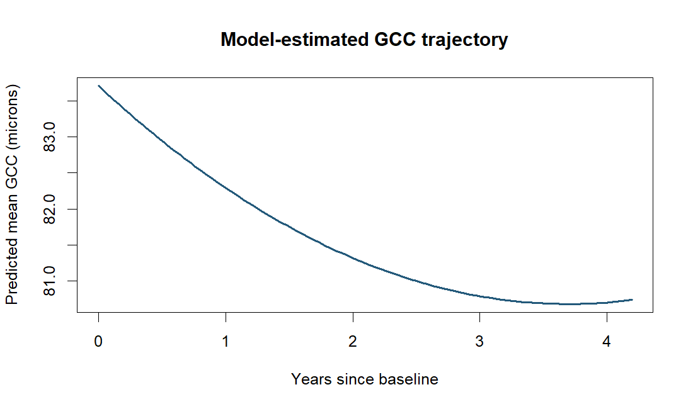

The fitted decline became less steep over follow-up
The fitted mean reached a minimum around 3.7 years, then turned slightly upward near the end of follow-up. I treat the small upturn as a feature of the quadratic fit at the boundary and avoid reading it as retinal recovery.
The curve describes the average across patients. In the original patient profiles, starting thickness and rates of change varied within the cohort.
GCC is the retinal ganglion cell complex. Thickness was measured in micrometers.
Why the spacing between visits mattered
Patients returned at different intervals. Two successive visits could be months apart for one patient and much farther apart for another. I used the actual time between visits so the model could allow measurements taken closer together to remain more alike after accounting for each patient’s trajectory.
How I chose the model
- Compare the mean trends
- I compared a flat mean, a straight line, a quadratic curve and a log-time curve by maximum likelihood. The quadratic had the lowest BIC. Its time terms in the final model were −1.634 × time + 0.221 × time², with time in years.
- Compare how visits are related
- With the same quadratic mean, I compared models by restricted maximum likelihood. Random intercepts and slopes let patients start at different thicknesses and change at different rates. Adding continuous-time AR(1) let the remaining within-patient correlation decay with time separation and gave the lowest BIC (4,078.6).
Mean comparisons · Correlation comparisons · Model coefficients
What age and baseline thickness added
Age
The coursework compared baseline thickness across ages and considered several ways age could relate to change over time. In the revised comparison, adding baseline age and its interaction with linear time did not improve BIC.
Baseline thickness
In a separate model using follow-up visits, the group with higher starting GCC had an estimated 0.559 μm/year steeper decline. The groups were formed using the first measurement, so extreme first readings can move toward typical values at later visits even when the baseline visit is left out of the fit.
Diagnostics and limits
I checked normalized residuals against fitted values and inspected a normal Q–Q plot. The comparisons are exploratory, and the coefficient intervals do not account for model selection. The curve describes the observed follow-up period, and the baseline-group comparison cannot establish that patients with higher starting thickness progress faster biologically.
The coursework explored individual profiles, alternative mean and covariance models, age and baseline severity. The September 2026 revision used a common mean for the covariance comparisons and updated the baseline-group analysis. Revision history.
Code and supporting results
R analysis · Results directory · Residual diagnostics · Methods and interpretation · Data access